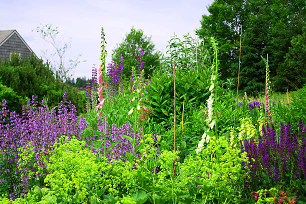
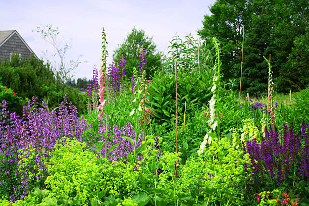

Why Learn About Endangered Animals?
Our Earth is built upon numerous layers of ecosystems and environments. Some of these ecosystems are fragile and subject to change based on what is happening on a global scale. Factors like global warming, habitat destruction, and natural disasters can cause a thriving ecosystem into an injured state. If we don't take action to save these animals within the ecosystems, they might face extinction. Famous animals we love today such as the gorilla, orangutan, blue whale, and sea otter are labeled as endangered. We must be aware of these situations as a society so that action will be taken to save these animals.
What should we do to help these animals frome home?
There are many ways to help the environment and save the world as a whole from home. One might think, what am I going to do by myself to make any change? Then millions of people think like that and no change happens. One change that would help your local environment is to stop using pesticides and allow natural plants to grow for the natural animals around. Another tip is to buy sustainable materials and don't buy products using endangered animals. A large scale change for society to be more eco-friendly and live in wildlife instead of replacing the wildlife will cause the world to heal
 
